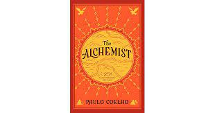
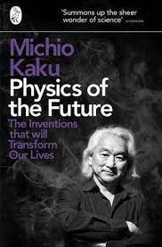
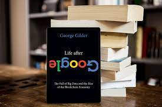

The Alchemist
The Alchemist (Portuguese: O Alquimista) is a novel by Brazilian author Paulo Coelho that was first published in 1988. Originally written in Portuguese, it became a widely translated international bestseller.[1][2] An allegorical novel, The Alchemist follows a young Andalusian shepherd in his journey to the pyramids of Egypt, after having a recurring dream of finding a treasure there.
Physics of the Future
Physics of the Future: How Science Will Shape Human Destiny and Our Daily Lives by the Year 2100 is a 2011 book by theoretical physicist Michio Kaku, author of Hyperspace and Physics of the Impossible. In it Kaku speculates about possible future technological development over the next 100 years.
Life after Google
There’s no avoiding the world of Google. In the 20 years since it was established, Google has redefined the way we interact online and with the world. It's even become a verb in the process. But is its tapestry of big data and free access truly a good thing? And will it be capable of holding its seat of power in the future? Because while Google retains information on almost everyone, it doesn’t have all that data under a proper lock and key. However, if Google’s heyday is approaching an end, what will replace it? That's where cryptocurrencies, blockchain, and bitcoin come in. This book summary describes the atmosphere that Google has created and why it’s no longer sustainable, also explaining how and why the cryptocosm’s focus on security is evolving and will continue to. In this summary of Life After Google by George Gilder, you'll also discover: what a “Siren Server” is; why you shouldn’t be concerned about Artificial Intelligence; and who Satoshi Nakamoto is.